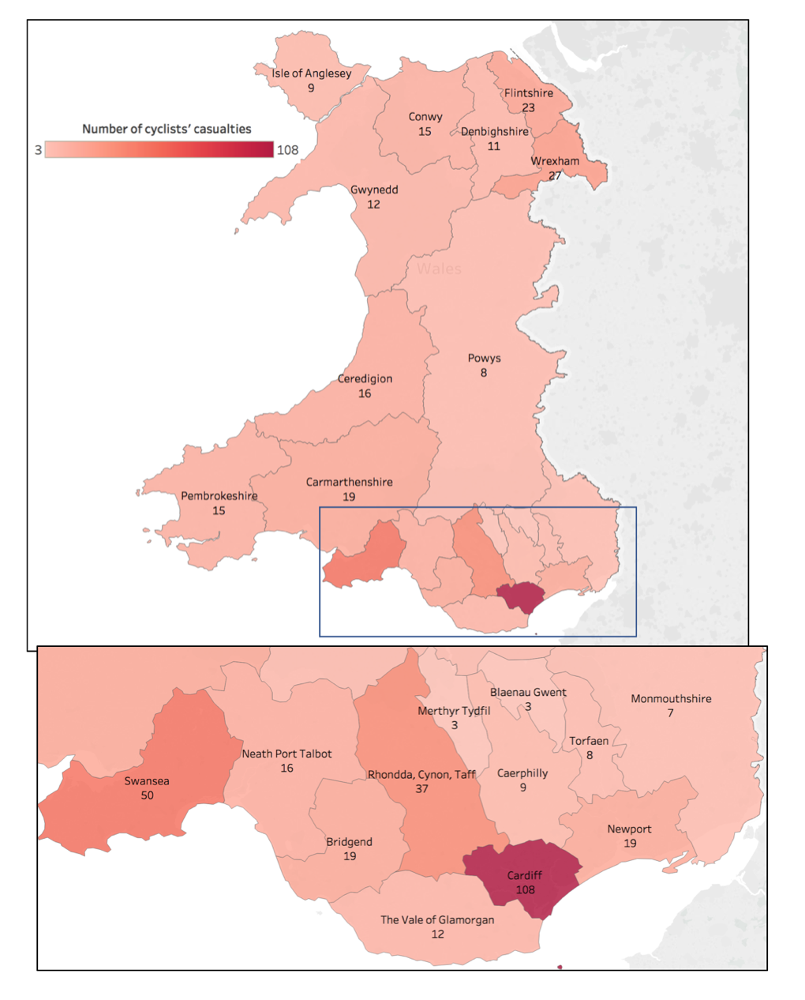

ardiff accounted for 25 percent of all cycling casualties in Wales in 2016, according to the latest road traffic data from the UK Department of Transport.
Cycling UK, a cycling advocacy group, has asked police forces to improve road safety for cyclists.
A total of 446 cyclists were injured last year in Wales and 108 of those were cycling in Cardiff. The Welsh capital represents only 11 percent of the Welsh population with 341,000 inhabitants.
Cardiff ranks ahead of every other Welsh local authority in bicycle injuries and fatalities. Swansea had the second worst record with 50 casualties and Rhondda ranked third with 37.
Cycling casualties by Welsh councils in 2016
Although there were no direct bicycle deaths in Cardiff last year, 20 percent of the injuries were serious. These injuries can lead to death 30 or more days after the accident.
Cycling UK, an NGO that engages with cyclist safety, is campaigning to improve the situation. They are putting their support behind the Operation Close Pass implemented in West Midlands last year.
This initiative aims to change dangerous driving behaviour by placing officers on bikes with cameras, and has encountered success across the UK.
A 17.6 percent points attainment gap separates disadvantaged pupils from their peers. NPT is the third lowest-performing local authority.
Cardiff North AM Julie Morgan advocates for its implementation explaining that “the fear of drivers passing too close is really off-putting for cyclists”.
But the South Wales police force refuses. South Wales Police and Crime commissioner Alun Michael said, “there is a multitude of work ongoing to promote the safety of cyclists”.